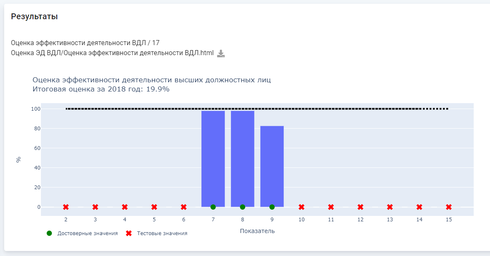

Виджет предназначен для отображения результатов отработки скрипта. Виджет состоит из следующих элементов:
Виджет покажет результаты, если выполнены все из приведенных ниже условий:
Виджет обновляет результаты отработки модели при нажатии на кнопку "Готово" на виджете входящих пакетов и обновлении страницы.
